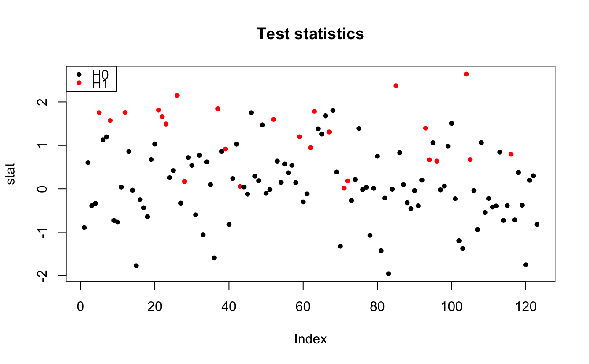

gaussianTestStatistics.RdSimulate Gaussian test statistics
gaussianTestStatistics( m, B, pi0 = 1, SNR = 0, dep = c("equi", "Toeplitz"), param = 0 )
| m | Number of hypotheses |
|---|---|
| B | Number of simulations |
| pi0 | Proportion of true null hypotheses |
| SNR | Signal to noise ratio. Either a numeric value (a measure of
distance between H0 and H1) or a vector of length |
| dep | A character value, the type of dependency between test statistics. Can be one of "equi" for equi-correlation, or "Toeplitz". Defaults to "equi". |
| param | A numeric value defaulting to |
A list with elements
A vector of length \(m\) test statistics
An \(m x B\) matrix of test statistics under the null hypothesis
A vector of length \(m\), the status of each hypothesis: 0 for true null hypothesis, and 1 for true alternative hypothesis
B
m <- 123 B <- 100 # independent statistics under the full null sim <- gaussianTestStatistics(m, B) # equi-correlated statistics under the full null sim <- gaussianTestStatistics(m, B, dep = "equi", param = 0.2) # equi-correlated statistics with some signal sim <- gaussianTestStatistics(m, B, pi0 = 0.8, SNR = 1, dep = "equi", param = 0.2) ## show test statistics stat <- sim$x pch <- 20 colStat <- 1+sim$H plot(stat, col=colStat, main="Test statistics", pch=pch)# Toeplitz statistics with some signal sim <- gaussianTestStatistics(m, B, pi0 = 0.8, SNR = 1, dep = "Toeplitz", param = -0.5)